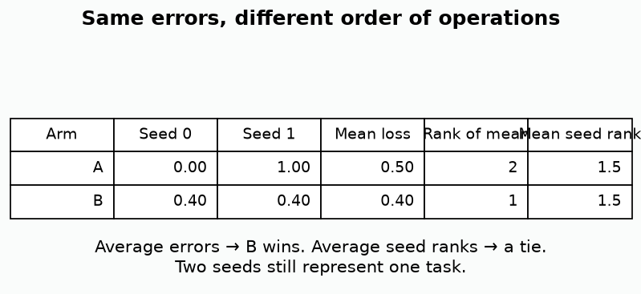
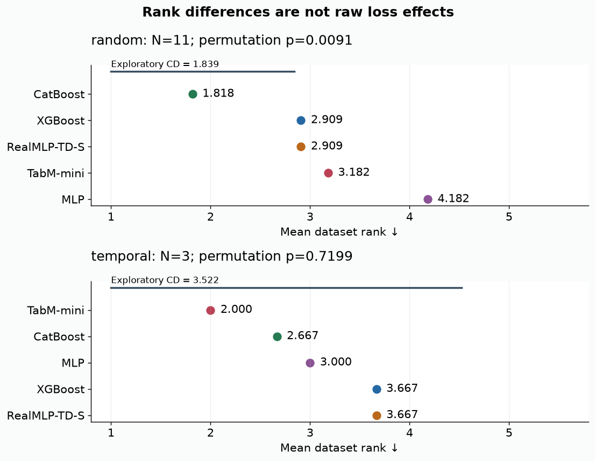
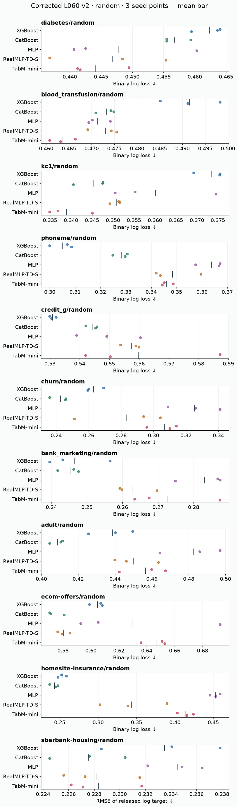
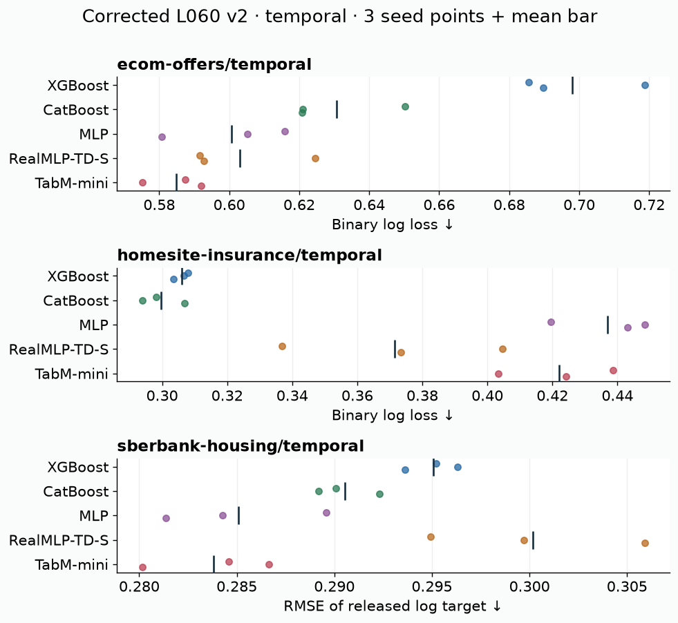

Year 2 · Quarter 2 · Lesson 060
A model comparison a skeptic can rerun
Retrieve before reading
Which labels may choose a procedure? How many dataset blocks do three seeds create?
The checkpoint is a defensible comparison¶
In plain terms. Before a fancy relational model can claim a win, it has to beat a fair single-table opponent — one that was given a real feature pipeline, a real optimizer, a real search budget, and an honest scorecard. This lesson builds that opponent and the paperwork that proves the comparison was fair.
A future relational model must beat a credible single-table procedure. That competitor is more than five model names in a table. It includes the feature representation, the optimizer, the search, the validation rule, and the resource budget. Your outcome here is a report whose selected models, predictions, uncertainty, and recommendation can all be reconstructed.
Scope check. A failed neural improvement is a valid outcome. The goal is a trustworthy measurement, not a win for any particular model.
Retrieve first, without notes. Answer these from memory before reading the code.
- From Lesson 058, why can a carefully chosen collection of datasets still favor a particular family?
- From Lesson 059, which labels may select a candidate, and which labels may estimate its performance?
- From Lesson 054, does TabM train on the loss of the average prediction, or on the average of the member losses?
No new model is introduced here. This is an evaluation checkpoint. We reuse three models taught earlier: the numerical MLP, RealMLP-TD-S, and the corrected TabM-mini. We add XGBoost and CatBoost as established comparator libraries.
The new skill is the evidence chain. An evidence chain is the ordered set of checks that lets a skeptic rerun your conclusion. It has five links: validate the partitions, freeze a choice, reconstruct its metric, check the declared panel, and compute paired effects. Five live notebook functions implement these links. Both a small fresh five-arm training run and the full saved-panel audit call them.
Two measurements exist, and they must not be confused. The earlier 210-record result remains available as historical evidence. It used relkit/tabm.py, whose mini architecture retained extra adapters and used incorrect fan-in initialization. The corrected measurement uses relkit/tabm_v2.py and a separate checkpoint_l060_v2.py. Its source hashes and all 210 newly fitted results are in the v2 evidence.
Scope check. Historical numbers must never be relabeled as corrected-model evidence.
Turn a model comparison into an executable argument¶
The checkpoint asks you to connect four things: a deployment question, a training procedure, saved predictions and a conclusion. If any link is missing, the result becomes difficult to audit. A score table without row identities cannot prove pairing; a recipe without predictions cannot reconstruct the metric; a conclusion without a target population can overgeneralize the evidence.
Begin with an explicit claim template: “Under these fixed splits and resource limits, procedure A had this measured advantage over procedure B, with this variation across repetitions.” Fill it from artifacts after the run. This keeps the prose attached to what was actually measured.
Random and temporal splits form separate panels because they ask different questions. The same dataset appearing in both panels is not two independent datasets. Likewise, three seeds on fixed rows improve your view of algorithmic variability without tripling the number of independent tasks.
The checkpoint deliberately reuses strong tree and neural recipes. Its purpose is to compare credible procedures, not to make a new architecture look good against an undertrained baseline. Family-specific preprocessing and optimization are acceptable when their information access and resource allocation are declared.
Decide what failure means before encountering it¶
A timeout, unsupported feature type, nonfinite prediction and ordinary poor score are different outcomes. Preserve their status and cost. Silently dropping unsuccessful tasks can make a procedure look stronger by changing its denominator. A deployment decision may care deeply about coverage and reliability even when average loss on successful tasks is excellent.
Four papers ask different comparison questions¶
In plain terms. Four papers set the standards we borrow from. They do not agree on one leaderboard, because each measures a different thing. We take one idea from each and say exactly how our small checkpoint differs.
Read the two protocol references first. Read TabArena v1 §§2–3 and Appendices A–D, then TabReD v4 §5.4 and Appendix C. These are complementary, not interchangeable. TabArena focuses on curated IID tasks and the peak procedure each method can reach. TabReD asks how evaluation changes when future rows replace shuffled rows.
Scope check. Their rankings cannot be stitched into one leaderboard.
Each row below names a source, the one idea we borrow, and how our checkpoint deliberately narrows it.
| Source and exact scope | Load-bearing contribution | What this checkpoint does |
|---|---|---|
| TabArena v1 §§2.1–2.3, A.4–A.5, C.1–C.2 | 51 curated tasks; inner eight-fold ensembles, one default plus 200 sampled configurations; repeated outer evaluation; explicit preprocessing and prediction artifacts | Imports the idea of an explicit procedure and auditable artifacts; uses a small fixed holdout, two candidates, no outer CV or post-hoc ensemble |
| TabReD v4 §5.4 and Appendix C | Three paired random/temporal splits and 15 initializations study changes in relative performance | Uses three released datasets, one split pair, three seeds and reduced row counts; estimates a conditional regime contrast |
| TabM v3 §§3.3–3.4, D.2–D.3 | A minimal first-input adapter creates member diversity; shared backbone and separate heads; memberwise training, prediction averaging | Corrected mini architecture, eight members, shared training batches, no nonlinear feature embeddings, smaller training budget |
| RealMLP v2 §3, A.2, C.6 | A complete tuned-default recipe, simplified TD-S variant, validation checkpoint selection and explicit aggregate uncertainty | Reduced TD-S at width 64 and 24 epochs; log-loss validation instead of the paper's main accuracy selection |
Matching a model name does not mean matching its procedure. TabArena's main binary metric is AUROC, while this checkpoint uses log loss. Its default RealMLP configuration disables label smoothing for its metric; ours retains the simplified original classification recipe's smoothing. TabM's paper also uses a special standard-deviation-based ranking rule, whereas ours uses ordinary average-tie ranks. The claim/source inventory and reproduction contract pin the exact sources, implementation dependencies and remaining work.
Freeze the experiment before fitting¶
In plain terms. Write down every decision — metric, models, splits, budget, how you pick a winner, when you freeze, what you postpone — before you fit anything. Deciding after you see the scores is how you fool yourself.
Bring the seven decisions from Lesson 059. They are: metric, candidate procedures, split identity, tuning budget, selection rule, freeze point, and postponed adjustment. If you have its exit.json, compare that ledger to this protocol. A disagreement is a declared change made before a fresh run. It is not permission to rewrite a decision after seeing the test result.
Scope check. The author correction was motivated by a code defect already discovered. It is a new measured operator, not independent confirmation of a hypothesis invented from its new scores.
The datasets come in two groups. Eight familiar public datasets form the continuity panel: diabetes, blood transfusion, kc1, phoneme, German credit, churn, bank marketing, and adult income. They are real data, but this convenient course roster has not passed TabArena's full curation. The released Ecom Offers, Homesite Insurance, and Sberbank Housing tasks add random and temporal panels.
Count the cells once. There are 14 dataset/regime cells, 11 underlying datasets, and 210 selected fits: 14 × 5 methods × 3 seeds. The two regimes of one TabReD dataset are related observations, not two independent datasets.
Every frozen decision below has a value and a reason.
| Decision | Frozen local value | Why it matters |
|---|---|---|
| Public rows | At most 900, sampled without labels by RNG 60 | Small-data comparison; different from full datasets |
| Public partitions | 60/20/20; first split RNG 60, second RNG 61; both stratified | Explicit split identity, identical rows across arms |
| TabReD rows | Released random-0 and sliding-window-0; caps 540/180/180 |
Matches regime pair at one window, not full paper scope |
| TabReD cap draws | RNG 550/551/552 for train/validation/test; sampled IDs sorted | Label-blind sampling reproducible from released pools |
| Model seeds | 0, 1, 2 crossed with all arms | Same seed keys permit pairing, not identical random draws across libraries |
| Candidate budget | Two configurations per arm; every candidate fitted | Search cost includes both the winner and loser |
| Selection | Minimum validation loss, first candidate on ties | Test labels never choose a candidate |
| Neural checkpoint | Lowest validation error among 24 epochs, last epoch on ties | Epoch selection is additional adaptation |
| Failure | Stop with an incomplete artifact; no rank summary until complete | A failed task cannot silently disappear from the denominator |
Selection does not trigger a refit. No arm is refitted on train plus validation after selection. The selected fitted object is evaluated as it stands. Changing this would create another procedure with a different training size.
Scope check. Equal candidate counts do not equalize search power: neural methods also compare epochs, and one tree configuration can cost more than another. Equal wall-clock limits or published defaults would each answer a different practical question.
Row identity is the spine of the comparison¶
Let I_train, I_valid and I_test be sets of stable row IDs. Each must be nonempty, contain no duplicate ID and be disjoint from the others. These are structural assertions you can test before fitting. They do not prove that features are historically legal or that entities are independent, but they catch a large class of accidental overlap and alignment errors.
Store these IDs with the dataset version and target definition. A positional index generated after sorting is not necessarily the same identity used before sorting. When predictions are saved, include the row IDs so metrics can be reconstructed in the original order or after an explicit join.
Preprocessing must be fitted on the training rows. Validation and test then pass through that frozen state. For a temporal panel, any label-based retrieval or feature aggregation must additionally respect the time at which information became available. The split validator is one gate, not the entire leakage audit.
Candidate budgets should be declared before fitting. Equal candidate counts, equal wall-clock limits and published defaults are distinct comparison designs. Record the one you use and the realized resources. A method receiving a larger search should not be described as winning solely because of its architecture.
Preserve each baseline's defining recipe. RealMLP's scaling and optimizer groups, TabM's member objective and probability aggregation, and tree early-stopping settings all affect the fitted procedure. Reusing a name while replacing its recipe with a generic loop weakens the comparison.
Preserve each baseline's important recipe¶
In plain terms. Every model gets the same fair input pipeline, fitted only on training rows so the future can never leak backward. But each model keeps the parts of its own recipe that make it itself.
One shared encoder, fitted on training rows only. The common encoder fits numeric medians and categorical one-hot columns on the training rows. Validation and test then transform through that fixed state. An unseen category — a value never seen during training — becomes an all-zero one-hot block.
Worked example. Training cities {A,B} become [1,0] and [0,1]. A future city C becomes [0,0], not a third column learned from test data. Numeric missingness receives the training median. A column entirely missing in training is filled with zero, because its median is undefined. The categorical path casts values to strings, so a missing categorical value can itself be a category if it was observed in training.
This shared input is a deliberate restriction. Common one-hot input is a controlled representation restriction: a limit we impose on purpose so every model reads the same columns. It suppresses CatBoost's native categorical machinery, so this is not a test of the strongest available mixed-type CatBoost pipeline. For TabReD we retain numeric and binary columns and count the omitted categorical columns. Data and feature hashes document the actual inputs.
Scope check. A clean splitter cannot undo a feature that already contains future information. The availability of source aggregates and label arrival times remains an independent audit question.
Each arm keeps its defining recipe below.
| Arm | Candidate difference | Fit and inference path |
|---|---|---|
| XGBoost | Depth 3 or 6 | 100 histogram boosting rounds, learning rate .05, row/column subsampling .8 |
| CatBoost | Depth 4 or 6 | 100 iterations at .05, one thread, common one-hot input, no validation early stopping |
| MLP | AdamW learning rate .001 or .003 | Training-derived standardization; three width-64 ReLU/dropout blocks, dropout .1, weight decay 1e−4 |
| Reduced RealMLP-TD-S | Base learning rate multiplier 1 or .5 | Robust scaling and smooth clipping; trainable feature scales, NTP layers, SELU/Mish, Adam (.9,.95), coslog4 schedule and parameter groups; classification smoothing .1 |
| Corrected TabM-mini | AdamW learning rate .001 or .003 | Standardization, first-input adapter only, three shared width-64 blocks, shared backbone biases, eight distinct heads, dropout .1, weight decay 1e−4 |
The neural models run a full but shortened schedule. The neural models always complete 24 epochs; validation selects the returned state. The RealMLP schedule is compressed into that duration, so "24 out of 256 epochs" would be misleading: we traverse a complete shortened schedule. The corrected TabM-mini removes the extra first-output adapter and member backbone biases, and initializes stored [input,output] weights by their actual input dimension.
Scope check. The existing Lesson 054 copied-weight source check validates the numeric architecture; it does not certify this benchmark recipe.
Worked example: TabM's two possible objectives. For TabM classification, member logits have shape [batch,8,2]. Training averages eight cross-entropies; inference softmaxes each member then averages probabilities. With true class 1 and member probabilities .9 and .1, the mean member loss is (-ln .9 - ln .1)/2 ≈ 1.204, while the loss of the averaged probability is -ln .5 ≈ .693. The second objective permits compensation between members; the measured operator uses the first. Neither eight members nor three model seeds create extra independent datasets.
![Synthetic worked protocol: validation [.43,.39] selects candidate 1. Only then may test labels enter the evaluator. The selected neural epoch and the candidate index are different choices.](../labs/figures/l060/protocol-v2.png)
Test labels enter once the choice is frozen¶
In plain terms. The test labels stay locked in a box. The fitter never sees them, the selector never sees them, and only the frozen winner is allowed to open the box — once — to be scored.
Follow the boundary in the diagram. The fitter receives training arrays and validation arrays. It returns one frozen predictor plus its validation error and selected epoch. It has no test argument. The selector sees only the two validation errors. Only then does the selected predictor receive test features, and the metric function receive test labels. A notebook CHECK changes saved targets and confirms that candidate selection is unchanged while metric reconstruction detects the changed evidence.
Worked example. Suppose candidate validation errors are [.43,.39], but their unknown test errors would be [.37,.46]. The valid choice is candidate 1, with reported test error .46. Reporting .37 would select on the evaluation set.
Scope check. If the deployment decision itself chooses between all five families after this report, its final chosen-family estimate may also be optimistic: a new untouched evaluation or nested selection is needed for that extra adaptive step. The saved five-arm table still validly describes its declared fixed procedures.
Row identity is equally necessary. A probability vector has no meaning until it is linked to target rows and class order. Each v2 record contains the test IDs in order, the targets, P(y=1) or scalar regression predictions, the class schema, all candidate validation losses, each candidate's selected epoch, and the winning index. The audit demands that every arm/seed of a task uses the same target sequence and the exact declared test-ID order.
Scope check. This catches accidental shuffling; it cannot prove that the raw dataset's semantic feature construction was leak-free.
Save the choice before saving its evaluation¶
Suppose validation chooses candidate 2 from a list of five. Save that index, its hyperparameters and its checkpoint identity before calculating the final test metric. This makes the causal order inspectable: validation selected; test evaluated. A later analysis can reconstruct the decision without relying on a narrative about what the author intended.
For classification, store class order with probability columns. For regression, store the output units and any inverse target transform. A correct model can appear wrong if predictions and labels are misaligned, and an incorrect metric implementation can produce a plausible-looking number.
Reconstruct the score from saved predictions using a separate evaluator. This checks the artifact chain and allows future summaries without refitting. It does not create a second independent experiment. Reanalysis and new measurements must be labeled separately.
If you inspect test failures and then change the model, the change is a new hypothesis informed by that test. Keep the original result and obtain fresh evaluation evidence for the revision. The practical goal is not to avoid learning from mistakes; it is to stop using the same evidence both to invent and confirm the fix.
Derive the reported errors¶
In plain terms. Two scores do the work: log loss for classification (how good were the probabilities) and RMSE for regression (how far off were the numbers). We build each from a single row before trusting a whole table.
Log loss, built from one row¶
For binary labels y_i ∈ {0,1} and probabilities p_i=P(y_i=1), the probability assigned to the observed label is p_i when y_i=1 and 1−p_i otherwise. Taking the negative log turns confident mistakes into large penalties. Averaging over rows gives
log_loss = −(1/n) Σ_i [y_i ln(p_i) + (1−y_i) ln(1−p_i)].
Worked example. For labels [1,0] and probabilities [.8,.3], the contributions are .22314 and .35667, giving .28991. Threshold accuracy would discard how confident those predictions were. The implementation checks finite aligned one-dimensional arrays, binary labels, and probabilities in [0,1], then clips to float64 machine epsilon and its complement to make endpoint logs finite.
Scope check. A malformed probability of 1.1 is rejected before clipping; clipping is not a license to repair invalid outputs silently.
RMSE, built from one row¶
For regression, square each residual in the released target's units, average, and take the square root: RMSE = sqrt(mean((y−ŷ)²)).
Worked example. Targets [1,5] and predictions [4,1] give squared residuals [9,16] and RMSE sqrt(12.5) ≈ 3.5355. For the released Sberbank data the target is log(price_doc/full_sq): the RMSE is in those logarithmic units, not currency and not raw sale-price RMSE.
Scope check. Sberbank's train and validation time ranges meet on a tied timestamp in split 0. The artifact accurately records non-strict ordering; a strictly later label-availability claim would require more evidence.
Never average the two scores together. Do not average raw log loss and RMSE across tasks: the units differ, and a change of target units could determine the result. Compare raw effects within each task, then use dimensionless ranks to summarize a declared task collection.
Read the result at three resolutions¶
In plain terms. Read the numbers three times: one row, then one dataset, then the whole collection. Averaging seeds first and then ranking is a different question from ranking each seed and averaging the ranks — and the two answers can disagree.
Predict first. If A's losses across two seeds are [0,1] and B's are [.4,.4], which method should rank first after seed averaging? A wins one seed emphatically, but B has the better average loss, .4 versus .5. If instead you rank separately per seed and average the ranks, both receive 1.5. That is a different estimand: the mean seedwise ordering rather than the ordering of estimated mean loss. Move the slider and find the tie at A's second loss .8.

Rank the datasets after averaging seeds¶
Write e_ds(m) for the error on dataset d, seed s, method m. First estimate the seed mean ē_d(m)=Σ_s e_ds(m)/S with S=3. Within each dataset, assign rank 1 to the smallest mean error and average the occupied positions on exact ties. Then average the N dataset ranks. The roster is supplied explicitly to aggregate_panel; inferring it only from successful records would fail to notice a completely absent dataset or model. Random and temporal panels are summarized separately.
Two significance summaries, both exploratory¶
The Friedman test. The Friedman null is that there is no systematic method effect in the dataset blocks. For K methods, rank dispersion is summarized by Q=12N/[K(K+1)] × Σ_m [mean_rank(m)−(K+1)/2]² without ties; SciPy applies a tie correction. Its chi-square reference has K−1 degrees of freedom and is an approximation.
Scope check. Eleven tasks and five methods are a small panel; three temporal tasks are especially unsuitable for treating asymptotic p-values as precise. We label them exploratory and also compute a within-task method-label permutation calibration: 20,000 draws for the random panel and all 14,400 permutations after fixing the first of three temporal rows. This calibration assumes exchangeable method labels within independent task blocks under the null. It does not make a convenience sample representative.
The Nemenyi critical difference. A Nemenyi critical difference compares two mean ranks after accounting for the whole declared method pool. We compute CD=q(.95,K,∞) × sqrt(K(K+1)/(12N)), where q is SciPy's studentized-range quantile. The 1/sqrt(2) convention is already absorbed in this form.
Scope check. Its threshold is exploratory here, particularly with three tasks, and is not a confidence interval on an error score. Consult Demšar §3.2 for the comparison framework and small-sample caution. No rejection does not establish equivalence.

Random: 11 blocks; CatBoost has the smallest observed mean rank (1.818). Exploratory chi-square p=0.0139; conditional permutation p=0.0091. Temporal: 3 blocks; TabM-mini has the smallest observed mean rank (2.000). Exploratory chi-square p=0.6626; conditional permutation p=0.7199. These are corrected local measurements, not reproduced paper rankings. The random calibration uses 20,000 draws; the temporal calibration is exact under the stated method-label exchangeability null. Neither panel establishes universal superiority.
Pair first, then quantify variation¶
Within one dataset, compute δ_s=e_ds(A)−e_ds(B) using matching seed keys. Its mean is the measured error gap; a negative value favors A. The sample SD is sqrt(Σ_s(δ_s−mean δ)²/(S−1)); an approximate conditional 95% t interval is mean δ ± t(.975,S−1) × SD/sqrt(S). With three seeds the multiplier is about 4.303. Pairing retains covariance: Var(A−B)=Var(A)+Var(B)−2Cov(A,B). Subtracting unrelated means and adding their separate SDs ignores this structure.
Scope check. These intervals describe only seed variation conditional on fixed rows, recipes, and split. They are not calibrated coverage guarantees for a new enterprise, another temporal window, or the general population of tabular datasets. Deterministic seeds can even give SD zero for an arm with little stochastic variation; that does not make its generalization error known exactly. Intervals are unadjusted across the many inspected task/model contrasts.


A measured reversal, with its uncertainty¶
The corrected Ecom Offers comparison makes the difference between a rank and a defensible decision concrete. Here every gap is TabM-mini minus XGBoost, so a negative value favors TabM; the intervals use three paired seeds on the fixed split.
| Task/regime | Mean raw loss gap | Conditional t95 | Interpretation |
|---|---|---|---|
| Ecom Offers / random | +0.04180 | [0.03109, 0.05250] | TabM has larger log loss |
| Ecom Offers / temporal | −0.11314 | [−0.17868, −0.04760] | TabM has smaller log loss |
| Homesite / temporal | +0.11602 | [0.07275, 0.15929] | The Ecom preference does not transfer |
The Ecom relative gap changes by −0.11314 − (+0.04180) = −0.15494. This is a paired-task regime contrast, not a claim that every neural method becomes more robust in the future. A three-seed interval excluding zero concerns this fixed recipe/window only.
Scope check. The evidence does not isolate whether class balance, temporal changes, feature behavior, or other differences drove the reversal. Inspect the saved per-row probabilities and class proportions before proposing a new experiment. The analysis artifact contains all 56 non-baseline paired contrasts and their seed differences.
The results above are author-reference measurements, independent of the notebook's unexecuted student cells. The notebook reconstructs every score from the saved predictions and displays full seed points, conditional intervals, candidate choices, and costs. Raw values remain available next to the ranked view so a rank difference cannot conceal a negligible practical gap.
Start at the row, then the task, then the collection¶
At the row level, inspect probability validity, class alignment and a few metric contributions. For a positive binary label with predicted probability 0.8, log loss contributes −ln(0.8)≈0.223. For probability 0.2 it contributes about 1.609. This explains why a few confident errors can matter even when accuracy changes little.
At the task level, average the declared repetitions and compute paired model differences. Keep raw score units meaningful within the task. Report seed variation as conditional on the fixed split when only initialization or procedure randomness changed.
At the collection level, rank models within each dataset after averaging seeds. With three datasets, the rank analysis has three task blocks in each regime, not nine seeds or six random/temporal combinations. Small task counts impose real limits on broad significance claims.
A mean-rank winner is an observed ordering, not an established universal winner. Friedman and Nemenyi summaries can indicate whether the panel resolves differences under their assumptions, but failure to reject does not prove equivalence. Report the unresolved uncertainty plainly.
Quality and cost form a joint decision¶
Two methods can trade lower loss for greater latency or search cost. A method is Pareto dominated when another measured method is no worse on every declared objective and strictly better on at least one; a nondominated method is not automatically best. The deployment constraint determines which trade-off matters.
Measure cost consistently. Include or exclude loading, preprocessing and context preparation explicitly. A warm prediction timer and a cold end-to-end timer answer different questions. Do not place them on one axis as though they measured the same operation.
The exit report should name the preferred local baseline, the evidence supporting it and a concrete condition that would change the decision. For example, a tighter latency constraint, a later temporal window or more datasets could overturn the choice. That conditional conclusion is more useful than a broad winner claim unsupported by the panel.
A model-by-regime interaction is more informative than two winners¶
Suppose A's loss is 0.30 on random rows and 0.50 on later rows, while B's loss is 0.32 and 0.40. A wins the random comparison by 0.02; B wins the temporal comparison by 0.10. The relative gap changes by 0.12. That change motivates a hypothesis about how the procedures respond to the regime difference.
It does not yet identify the cause. The temporal panel may have different training size, class balance, feature availability or target difficulty. A useful follow-up holds more of these factors fixed or measures them explicitly. For example, matching training sample size can distinguish a data-volume explanation from a temporal-distribution explanation.
The same logic applies to context size, missing features and tuning budget. Instead of presenting a winner separately under each setting, inspect how the paired model difference changes with the intervention. This is the quantity that connects a mechanism prediction to comparative evidence.
Keep uncertainty attached to the unit that changed. Repeated seeds on fixed temporal windows describe algorithmic variation; repeated windows add information about temporal stability. The checkpoint's fixed design should not be described as having measured the latter unless those windows were actually evaluated.
Quality and cost determine a conditional decision¶
In plain terms. A recommendation is not "which model scored best." It is "which model I would ship, given a stated accuracy target and a stated cost limit" — and honest timing that says what the clock included.
Timing must include the losers. A search-time comparison must include losing configurations. Our fit_selection_seconds spans all candidate fits and validation evaluations; predict_seconds spans the selected predictor on the complete test matrix. Common data loading and common median/one-hot preprocessing are outside those timers. Neural standardization/robust scaling is inside the fitter.
Scope check. The author run experienced variable host contention, so these timings are descriptive records and cannot establish hardware efficiency superiority. This is one-thread CPU evidence, not a cold end-to-end request latency benchmark and not GPU throughput. The historical
last_invocation_secondswas only a resumed tail, so it must never be presented as total historical suite cost.
State the objective before the test set. For a deployment decision, specify a task, an acceptable loss difference, and a cost limit before examining a new test set. A procedure is Pareto dominated if another is no worse on both declared objectives and strictly better on at least one. A nondominated procedure merely remains eligible; it need not be preferred. A score-first ranking answers a different question from minimizing loss subject to a 10 ms prediction budget.
Compare the gap, not the two winners. Compare the random-versus-temporal paired model gap, not only the two winners. If A−B is −.02 on shuffled rows and +.10 on later rows, the gap changes by .12. This suggests differential sensitivity to the regime.
Scope check. This does not identify temporal drift as the sole cause: windows can differ in difficulty, class balance, feature distributions, and legal information. A follow-up should specify which factor is held fixed. The three released tasks are paired across regimes, so comparing the aggregate 11-task random rank to the aggregate three-task temporal rank confounds regime with task composition.
Exit: write a report a skeptic can rerun¶
In plain terms. Finish by producing an artifact and a short written argument that a doubter could rerun end to end — then point to the exact bigger experiments you did not run.
Complete the checkpoint. Complete the five code tasks, run the independent CHECK cells, reconstruct all 210 v2 metrics, and run the small fresh five-arm experiment through your live functions. Save data/cache/l060-student/exit.json with the source text of the live operations, evidence hashes, the complete declared panel, reconstructed summaries, paired effects, permutation calibration, call counts, and the seven-decision ledger. Write at least 120 words explaining one task's practical gap, one regime contrast, the timing definition, and an evaluation that could reverse your recommendation.
Scope check. Code checks verify the artifact chain; the teacher must still assess your reasoning.
Then take the explicit NEXT STEP after EXIT. Run the corrected lab panel again from a fresh output path, or the larger closer operator with 4,000 public rows, 128 neural epochs, and 800 tree iterations. The notebook gate is off by default; a CPU Modal wrapper exists for unattended runs.
Scope check. Neither is a paper-reproduction preset. Full TabArena reproduction instead requires its curated suite, versioned wrapper, nested folds, candidate search, and ensemble treatment; full TabReD replication requires the original task release, full feature treatment, three split pairs, model roster, metric, and evaluation seeds. The contract separates these paths.
Connect this checkpoint to what comes next. Lesson 061 asks how a learned prior can replace per-task fitting; later pretrained predictors must still pass the same label-access, version, and cost accounting. A future relational model adds an entity graph and point-in-time features, increasing the importance of these boundaries. The single-table baseline is the measured procedure it must beat, not an under-specified model name. Explain the boundary in your own words and ask the teacher about any operation you cannot trace.